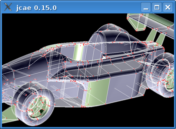
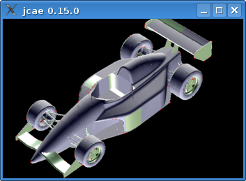

A user kindly reported problems with his configuration due to memory limitations, and explained (in French) how to fix it. The mesher is launched into a separate JVM, and default maximum memory is set to 1500MB. The reason is that jCAE is primarily designed to work with very large meshes for finite element applications, and it is quite logical to have lots of RAM. We checked on Linux systems that computers with less RAM (1GB) are not affected by these settings, but it seems that Windows refuses to launch a JVM in these conditions. If you see messages like
Error occurred during initialization of VM Could not reserve enough space for object heap Could not create the Java virtual machine.
on your console, you need to modify maximumMemory property in Window/Options/Mesher settings tab.
 